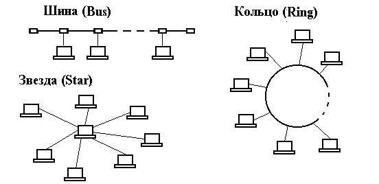
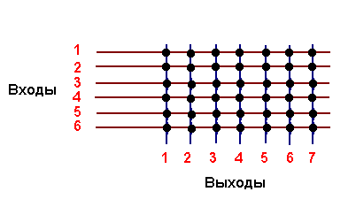

Глава 1 Введение в вычислительные сети
Телематика. Это новая научно-техническая дисциплина, предметом которой являются методы и средства передачи информации на расстояния, существенно превышающие линейные размеры площади, занимаемой участниками связи. Название дисциплины произошло из частей слов "телекоммуникации" и "информатика".
Современные телекоммуникационные технологии основаны на использовании информационных сетей.
Cети. Коммуникационная cеть - система, состоящая из объектов, осуществляющих функции генерации, преобразования, хранения и потребления продукта, называемых пунктами (узлами) сети, и линий передачи (связей, коммуникаций, соединений), осуществляющих передачу продукта между пунктами.
Отличительная особенность коммуникационной сети - большие расстояния между пунктами по сравнению с геометрическими размерами участков пространства, занимаемых пунктами. В качестве продукта могут фигурировать информация, энергия, масса, и соответственно различают группы сетей информационных, энергетических, вещественных. В группах сетей возможно разделение на подгруппы. Так, среди вещественных сетей могут быть выделены сети транспортные, водопроводные, производственные и др. При функциональном проектировании сетей решаются задачи синтеза топологии, распределения продукта по узлам сети, а при конструкторском проектировании выполняются размещение пунктов в пространстве и проведение (трассировка) соединений.
Информационная сеть - коммуникационная сеть, в которой продуктом генерирования, переработки, хранения и использования является информация.
Вычислительная сеть - информационная сеть, в состав которой входит вычислительное оборудование. Компонентами вычислительной сети могут быть ЭВМ и периферийные устройства, являющиеся источниками и приемниками данных, передаваемых по сети. Эти компоненты составляют оконечное оборудование данных (ООД или DTE - Data Terminal Equipment). В качестве ООД могут выступать ЭВМ, принтеры, плоттеры и другое вычислительное, измерительное и исполнительное оборудование автоматических и автоматизированных систем. Собственно пересылка данных происходит с помощью сред и средств, объединяемых под названием среда передачи данных.
Подготовка данных, передаваемых или получаемых ООД от среды передачи данных, осуществляется функциональным блоком, называемым аппаратурой окончания канала данных (АКД или DCE - Data Circuit-Terminating Equipment). АКД может быть конструктивно отдельным или встроенным в ООД блоком. ООД и АКД вместе представляют собой станцию данных, которую часто называют узлом сети. Примером АКД может служить модем.
Классификация сетей. Вычислительные сети классифицируются по ряду признаков.
В зависимости от расстояний между связываемыми узлами различают вычислительные сети:
территориальные - охватывающие значительное географическое пространство; среди территориальных сетей можно выделить сети региональные и глобальные, имеющие соответственно региональные или глобальные масштабы; региональные сети иногда называют сетями MAN (Metropolitan Area Network), а общее англоязычное название для территориальных сетей - WAN (Wide Area Network);
локальные (ЛВС) - охватывающие ограниченную территорию (обычно в пределах удаленности станций не более чем на несколько десятков или сотен метров друг от друга, реже на 1...2 км); локальные сети обозначают LAN (Local Area Network);
корпоративные (масштаба предприятия) - совокупность связанных между собой ЛВС, охватывающих территорию, на которой размещено одно предприятие или учреждение в одном или нескольких близко расположенных зданиях. Локальные и корпоративные вычислительные сети - основной вид вычислительных сетей, используемых в системах автоматизированного проектирования (САПР).
Особо выделяют единственную в своем роде глобальную сеть Internet (реализованная в ней информационная служба World Wide Web (WWW) переводится на русский язык как всемирная паутина); это сеть сетей со своей технологией. В Internet существует понятие интрасетей (Intranet) - корпоративных сетей в рамках Internet.
Различают интегрированные сети, неинтегрированные сети и подсети. Интегрированная вычислительная сеть (интерсеть) представляет собой взаимосвязанную совокупность многих вычислительных сетей, которые в интерсети называются подсетями.
В автоматизированных системах крупных предприятий подсети включают вычислительные средства отдельных проектных подразделений. Интерсети нужны для объединения таких подсетей, а также для объединения технических средств автоматизированных систем проектирования и производства в единую систему комплексной автоматизации (CIM - Computer Integrated Manufacturing). Обычно интерсети приспособлены для различных видов связи: телефонии, электронной почты, передачи видеоинформации, цифровых данных и т.п., и в этом случае они называются сетями интегрального обслуживания.
Развитие интерсетей заключается в разработке средств сопряжения разнородных подсетей и стандартов для построения подсетей, изначально приспособленных к сопряжению.
Подсети в интерсетях объединяются в соответствии с выбранной топологией с помощью блоков взаимодействия.
В зависимости от топологии соединений узлов различают сети шинной (магистральной), кольцевой, звездной, иерархической, произвольной структуры.

Среди ЛВС наиболее распространены (рис. 1.1):
шинная (bus) - локальная сеть, в которой связь между любыми двумя станциями устанавливается через один общий путь и данные, передаваемые любой станцией, одновременно становятся доступными для всех других станций, подключенных к этой же среде передачи данных (последнее свойство называют широковещательностью);
кольцевая (ring) - узлы связаны кольцевой линией передачи данных (к каждому узлу подходят только две линии); данные, проходя по кольцу, поочередно становятся доступными всем узлам сети;
звездная (star) - имеется центральный узел, от которого расходятся линии передачи данных к каждому из остальных узлов.
В зависимости от способа управления различают сети:
"клиент/сервер" - в них выделяется один или несколько узлов (их название - серверы), выполняющих в сети управляющие или специальные обслуживающие функции, а остальные узлы (клиенты) являются терминальными, в них работают пользователи. Сети клиент/сервер различаются по характеру распределения функций между серверами, другими словами по типам серверов (например, файл-серверы, серверы баз данных). При специализации серверов по определенным приложениям имеем сеть распределенных вычислений. Такие сети отличают также от централизованных систем, построенных на мэйнфреймах;
одноранговые - в них все узлы равноправны; поскольку в общем случае под клиентом понимается объект (устройство или программа), запрашивающий некоторые услуги, а под сервером - объект, предоставляющий эти услуги, то каждый узел в одноранговых сетях может выполнять функции и клиента, и сервера.
Наконец появилась сетецентрическая концепция, в соответствии с которой пользователь имеет лишь дешевое оборудование для обращения к удаленным компьютерам, а сеть обслуживает заказы на выполнение вычислений и получения информации. То есть пользователю не нужно приобретать программное обеспечение для решения прикладных задач, ему нужно лишь платить за выполненные заказы. Подобные компьютеры называют тонкими клиентами или сетевыми компьютерами.
В зависимости от того, одинаковые или неодинаковые ЭВМ применяют в сети, различают сети однотипных ЭВМ, называемые однородными, и разнотипных ЭВМ - неоднородные (гетерогенные). В крупных автоматизированных системах, как правило, сети оказываются неоднородными.
В зависимости от прав собственности на сети последние могут быть сетями общего пользования (public) или частными (private). Среди сетей общего пользования выделяют телефонные сети ТфОП (PSTN - Public Switched Telephone Network) и сети передачи данных (PSDN- Public Switched Data Network).
Сети также различают в зависимости от используемых в них протоколов и по способам коммутации.
Способы коммутации. Под коммутацией данных понимается их передача, при которой канал передачи данных может использоваться попеременно для обмена информацией между различными пунктами информационной сети в отличие от связи через некоммутируемые каналы, обычно закрепленные за определенными абонентами.
Различают следующие способы коммутации данных:
коммутация каналов - осуществляется соединение ООД двух или более станций данных и обеспечивается монопольное использование канала передачи данных до тех пор, пока соединение не будет разомкнуто;
коммутация сообщений - характеризуется тем, что создание физического канала между оконечными узлами необязательно и пересылка сообщений происходит без нарушения их целостности; вместо физического канала имеется виртуальный канал, состоящий из физических участков, и между участками возможна буферизация сообщения;
коммутация пакетов - сообщение передается по виртуальному каналу, но оно разделяется на пакеты, при этом канал передачи данных занят только во время передачи пакета (без нарушения его целостности) и по ее завершении освобождается для передачи других пакетов.
Коммутация каналов. Коммутация каналов может быть пространственной и временной.
Пространственный коммутатор размера N*M представляет собой сетку (матрицу), в которой N входов подключены к горизонтальным шинам, а M выходов - к вертикальным (рис. 1.2).
В узлах сетки имеются коммутирующие элементы, причем в каждом столбце сетки может быть открыто не более чем по одному элементу. Если N < M, то коммутатор может обеспечить соединение каждого входа с не менее чем одним выходом; в противном случае коммутатор называется блокирующим, т.е. не обеспечивающим соединения любого входа с одним из выходов. Обычно применяются коммутаторы с равным числом входов и выходов N*N.

Недостаток рассмотренной схемы - большое число коммутирующих элементов в квадратной матрице, равное N2. Для устранения этого недостатка применяют многоступенные коммутаторы. Например, схема трехступенного коммутатора 6*6 имеет вид, представленный на рис. 1.3.
Рис. 1.3. Схема трехступенного пространственного коммутатора
Достаточным условием отсутствия блокировок входов является равенство k > 2*n-1. Здесь k - число блоков в промежуточном каскаде, n = N/p; p - число блоков во входном каскаде. В приведенной на рис. 1.3 схеме это условие не выполнено, поэтому блокировки возможны. Например, если требуется выполнить соединение a1-d1, но ранее скоммутированы соединения a2-b2-c4-d3, a3-b3-c1-d2, то для a1 доступны шины b1,с3 и с5, однако они не ведут к d1.
В многоступенных коммутаторах существенно уменьшено число переключательных элементов за счет некоторого увеличения задержки. Так, при замене одноступенного коммутатора 1000*1000 трехступенным с n = 22 и k = 43 число переключателей уменьшается с 10 6 до 2*46*22*43+43*46*46, т.е. примерно до 0,186*10 6 .
Временной коммутатор построен на основе буферной памяти, запись производится в ее ячейки последовательным опросом входов, а коммутация осуществляется благодаря считыванию данных на выходы из нужных ячеек памяти. При этом происходит задержка на время одного цикла "запись-чтение". В настоящее время преимущественно используются временная или смешанная коммутация.
Коммутация пакетов. Во многих случаях наиболее эффективной оказывается коммутация пакетов. Во-первых, ускоряется передача данных в сетях сложной конфигурации за счет того, что возможна параллельная передача пакетов одного сообщения на разных участках сети; во-вторых, при появлении ошибки требуется повторная передача короткого пакета, а не всего длинного сообщения. Кроме того, ограничение сверху на размер пакета позволяет обойтись меньшим объемом буферной памяти в промежуточных узлах на маршрутах передачи данных в сети.
В сетях коммутации пакетов различают два режима работы: режим виртуальных каналов (другое название - связь с установлением соединения) и дейтаграммный режим (связь без установления соединения).
В режиме виртуальных каналов пакеты одного сообщения передаются в естественном порядке по устанавливаемому маршруту. При этом в отличие от коммутации каналов линии связи могут разделяться многими сообщениями, когда попеременно по каналу передаются пакеты разных сообщений (это так называемый режим временного мультиплексирования, иначе TDM - Time Division Method), или задерживаться в промежуточных буферах. Предусматривается контроль правильности передачи данных путем посылки от получателя к отправителю подтверждающего сообщения - положительной квитанции. Этот контроль возможен как во всех промежуточных узлах маршрута, так и только в конечном узле. Он может осуществляться старт-стопным способом, при котором отправитель до тех пор не передает следующий пакет, пока не получит подтверждения о правильной передаче предыдущего пакета, или способом передачи "в окне". Окно может включать N пакетов, и возможны задержки в получении подтверждений на протяжении окна. Так, если произошла ошибка при передаче, т.е. отправитель получает отрицательную квитанцию относительно пакета с номером K, то нужна повторная передача и она начинается с пакета K
Например, в сетях можно использовать переменный размер окна. Так, в соответствии с рекомендацией документа RFC-793 время ожидания подтверждений вычисляется по формуле
T ож = 2*Tср,
где Tср := 0,9*Tср + 0,1*Ti, Tср - усредненное значение времени прохода пакета до получателя и обратно, Ti - результат очередного измерения этого времени.
В дейтаграммном режиме сообщение делится на дейтаграммы. Дейтаграмма - часть информации, передаваемая независимо от других частей одного и того же сообщения в вычислительных сетях с коммутацией пакетов. Дейтаграммы одного и того же сообщения могут передаваться в сети по разным маршрутам и поступать к адресату в произвольной последовательности, что может послужить причиной блокировок сети. На внутренних участках маршрута контроль правильности передачи не предусмотрен и надежность связи обеспечивается лишь контролем на оконечном узле.
Виды связи и режимы работы сетей передачи сообщений. Первоначальными видами сообщений могут быть голос, изображения, текст, данные. Для передачи звука традиционно используется телефон, изображений - телевидение, текста - телеграф (телетайп), данных - вычислительные сети. Передача документов (текста) может быть кодовой или факсимильной. Для передачи в единой среде звука, изображений и данных применяют сети, называемые сетями интегрального обслуживания.
Кодовая передача сообщений между накопителями, находящимися в узлах информационной сети, называется телетексом (в отличие от телекса - телетайпной связи), а факсимильная связь называется телефаксом. Виды телетекса: электронная почта (E-mail) - обмен сообщениями между двумя пользователями сети, обмен файлами, "доска объявлений" и телеконференции - широковещательная передача сообщений.
Установление соединения между отправителем и получателем с возможностью обмена сообщениями без заметных временных задержек характеризует режим работы on-line ("на линии"). При существенных задержках с запоминанием информации в промежуточных узлах имеем режим off-line ("вне линии").
Связь может быть односторонней (симплексной), с попеременной передачей информации в обоих направлениях (полудуплексной) или одновременной в обоих направлениях (дуплексной).
Протоколы. Это набор семантических и синтаксических правил, определяющий поведение функциональных блоков сети при передаче данных. Другими словами, протокол - это совокупность соглашений относительно способа представления данных, обеспечивающего их передачу в нужных направлениях и правильную интерпретацию данных всеми участниками процесса информационного обмена.
Поскольку информационный обмен - процесс многофункциональный, то протоколы делятся на уровни. К каждому уровню относится группа родственных функций. Для правильного взаимодействия узлов различных вычислительных сетей их архитектура должна быть открытой. Этим целям служат унификация и стандартизация в области телекоммуникаций и вычислительных сетей.
Унификация и стандартизация протоколов выполняются рядом международных организаций, что наряду с разнообразием типов сетей породило большое число различных протоколов. Наиболее широко распространенными являются протоколы, разработанные для сети ARPANET и применяемые в глобальной сети Internet, протоколы открытых систем Международной организации по стандартизации (ISO -Intrenational Standard Organization), протоколы Международного телекоммуникационного союза (International Telecommunication Union -ITU, ранее называвшегося CCITT) и протоколы Института инженеров по электротехнике и электронике (IEEE - Institute of Electrical and Electronics Engineers). Протоколы сети Internet объединяют под названием TCP/IP. Протоколы ISO являются семиуровневыми и известны как протоколы базовой эталонной модели взаимосвязи открытых систем - ЭМВОС).
Эталонная модель взаимосвязи открытых систем. Базовая ЭМВОС - это модель, принятая ISO для описания общих принципов взаимодействия информационных систем. ЭМВОС признана всеми международными организациями как основа для стандартизации протоколов информационных сетей.
В ЭМВОС информационная сеть рассматривается как совокупность функций, которые делятся на группы, называемые уровнями. Разделение на уровни позволяет вносить изменения в средства реализации одного уровня без перестройки средств других уровней, что значительно упрощает и удешевляет модернизацию средств по мере развития техники.
ЭМВОС содержит семь уровней. Ниже приведены их номера, названия и выполняемые функции.
7-й уровень - прикладной (Application): включает средства управления прикладными процессами; эти процессы могут объединяться для выполнения поставленных заданий, обмениваться между собой данными. Другими словами, на этом уровне определяются и оформляются в блоки те данные, которые подлежат передаче по сети. Уровень включает, например, такие средства для взаимодействия прикладных программ, как прием и хранение пакетов в "почтовых ящиках" (mail-box).
6-й уровень - представительный (Presentation): реализуются функции представления данных (кодирование, форматирование, структурирование). Например, на этом уровне выделенные для передачи данные преобразуются из кода ЕBCDIC в ASCII и т.п.
5-й уровень - сеансовый (Session): предназначен для организации и синхронизации диалога, ведущегося объектами (станциями) cети. На этом уровне определяются тип связи (дуплекс или полудуплекс), начало и окончание заданий, последовательность и режим обмена запросами и ответаами взаимодействующих партнеров.
4-й уровень - транспортный (Transport): предназначен для управления сквозными каналами в сети передачи данных; на этом уровне обеспечивается связь между оконечными пунктами (в отличие от следующего сетевого уровня, на котором обеспечивается передача данных через промежуточные компоненты сети). К функциям транспортного уровня относятся мультиплексирование и демультиплексирование (сборка-разборка пакетов), обнаружение и устранение ошибок в передаче данных, реализация заказанного уровня услуг (например, заказанной скорости и надежности передачи).
3-й уровень - сетевой (Network): на этом уровне происходит формирование пакетов по правилам тех промежуточных сетей, через которые проходит исходный пакет, и маршрутизация пакетов, т.е. определение и реализация маршрутов, по которым передаются пакеты. Другими словами, маршрутизация сводится к образованию логических каналов. Логическим каналом называется виртуальное соединение двух или более объектов сетевого уровня, при котором возможен обмен данными между этими объектами. Понятию логического канала необязательно соответствие некоего физического соединения линий передачи данных между связываемыми пунктами. Это понятие введено для абстрагирования от физической реализации соединения. Еще одной важной функцией сетевого уровня после маршрутизации является контроль нагрузки на сеть с целью предотвращения перегрузок, отрицательно влияющих на работу сети.
2-й уровень - канальный (Link, уровень звена данных): предоставляет услуги по обмену данными между логическими объектами предыдущего сетевого уровня и выполняет функции, связанные с формированием и передачей кадров, обнаружением и исправлением ошибок, возникающих на следующем, физическом уровне. Кадром называется пакет канального уровня, поскольку пакет на предыдущих уровнях может состоять из одного или многих кадров.
1-й уровень - физический (Physical): предоставляет механические, электрические, функциональные и процедурные средства для установления, поддержания и разъединения логических соединений между логическими объектами канального уровня; реализует функции передачи битов данных через физические среды. Именно на физическом уровне осуществляются представление информации в виде электрических или оптических сигналов, преобразования формы сигналов, выбор параметров физических сред передачи данных.
В конкретных случаях может возникать потребность в реализации лишь части названных функций, тогда соответственно в сети имеется лишь часть уровней. Так, в простых (неразветвленных) ЛВС отпадает необходимость в средствах сетевого и транспортного уровней. В то же время сложность функций канального уровня делает целесообразным его разделение в ЛВС на два подуровня: управление доступом к каналу (МАС - Medium Access Control) и управление логическим каналом (LLC - Logical Link Control). К подуровню LLC в отличие от подуровня МАС относится часть функций канального уровня, не связанных с особенностями передающей среды.
Передача данных через разветвленные сети происходит при использовании инкапсуляции/декапсуляции порций данных. Так, сообщение, пришедшее на транспортный уровень, делится на сегменты, которые получают заголовки и передаются на сетевой уровень. Сегментом обычно называют пакет транспортного уровня. Сетевой уровень организует передачу данных через промежуточные сети. Для этого сегмент может быть разделен на части (пакеты), если сеть не поддерживает передачу сегментов целиком. Пакет снабжается своим сетевым заголовком (т.е. происходит инкапсуляция). При передаче между узлами промежуточной ЛВС требуется инкапсуляция пакетов в кадры с возможной разбивкой пакета. Приемник декапсулирует сегменты и восстанавливает исходное сообщение.